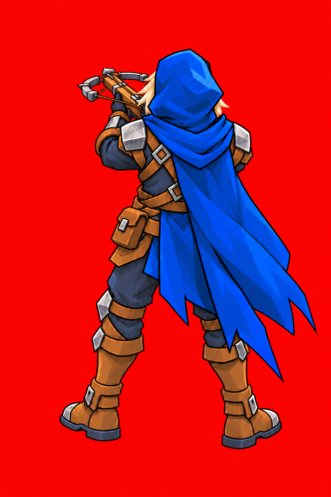

<!doctype html>
<html lang="zh-CN"><meta charset="utf-8"><meta name="viewport" content="width=device-width,initial-scale=1,viewport-fit=cover">
<title>重弩手 · 朝前平举弩待机</title>
<style>
*{box-sizing:border-box}body{margin:0;background:#17272e;color:#f1f2e7;font:16px system-ui,"Microsoft YaHei",sans-serif}main{max-width:950px;margin:auto;padding:24px 16px 36px}h1{font-size:25px;margin:0 0 12px}h2{font-size:20px;margin:28px 0 12px}p{line-height:1.7;color:#bbcac8}.pair{display:grid;grid-template-columns:1fr 1fr;gap:12px}figure{margin:0}canvas{display:block;width:100%;height:auto;background:#293c3b;border:1px solid #42544c;border-radius:10px}figcaption{text-align:center;color:#c9d5c8;margin:9px 0 14px}.toolbar{display:flex;gap:12px;flex-wrap:wrap;align-items:center;margin:18px 0}button,select{border:0;border-radius:7px;padding:10px 15px;background:#bfd794;color:#253125;font:600 15px system-ui;cursor:pointer}a{color:#c5dfab}input{accent-color:#bfd794;max-width:100%}.links{display:flex;flex-wrap:wrap;gap:16px;line-height:1.9}.master{display:block;width:auto;max-width:100%;max-height:560px;margin:auto;background:red}.video{display:block;width:100%;max-height:560px;background:red;border-radius:10px}
</style>
<main><h1>重弩手 · 朝前平举弩待机</h1>
<p>朝战场前方平举弩，弩身以透视表现朝向；轻微呼吸和衣摆运动。左右朝向共用完整人物帧，镜像播放。</p>
<div class="pair"><figure><canvas id="left" width="420" height="510"></canvas><figcaption>原向</figcaption></figure><figure><canvas id="right" width="420" height="510"></canvas><figcaption>镜像</figcaption></figure></div>
<div class="toolbar"><button id="play">暂停</button><button id="bg">切换浅色背景</button><label>速度 <select id="speed"><option value=".75">0.75×</option><option value="1" selected>1×</option><option value="1.25">1.25×</option></select></label><label>逐帧 <input id="frame" type="range" min="0" value="0"></label><span id="counter"></span></div>
<h2>游戏素材合成 · 实际显示尺寸</h2><canvas id="battle" width="750" height="500"></canvas>
<h2>红底朝前平举弩首帧</h2>
<h2>AI 源视频</h2><video class="video" src="source.mp4" controls loop muted playsinline preload="metadata"></video><p id="sourceInfo"></p>
<div class="links"><a href="ready-red.png" download>红底原图</a><a href="idle.png" download>序列帧图集</a><a href="idle.frames.json" download>帧与时序</a><a href="contact-sheet.jpg">全部帧接触表</a><a href="idle-mirror.gif">镜像待机 GIF</a><a href="battle-composite.gif">场景合成 GIF</a><a href="source.mp4">源视频</a><a href="idle-prompt.txt">待机提示词</a></div>
</main><script>
(async()=>{
const loadImage=async src=>{const im=new Image();im.src=src;await im.decode();return im};
const [m,a,atlas,archer,floor,wall]=await Promise.all([
fetch('idle.frames.json').then(r=>r.json()),fetch('archer-idle.frames.json').then(r=>r.json()),
loadImage('idle.png'),loadImage('archer-idle.png'),loadImage('floor.png'),loadImage('wall.png')]);
document.querySelector('#sourceInfo').textContent='两秒视频请求，实际源视频 '+m.source.seconds.toFixed(2)+' 秒、'+m.source.frameCount+' 帧；透明帧按四秒轻缓循环播放。';
let light=false,playing=true,clock=0,speed=1,frameIndex=0,last=performance.now();
const slider=document.querySelector('#frame');slider.max=m.animation.frames.length-1;
const edges=[0];for(const seconds of m.animation.frameDurations)edges.push(edges[edges.length-1]+seconds);
const atTime=time=>{let i=0;while(i<m.animation.frames.length-1&&time>=edges[i+1])i++;return i};
function context(id,w,h){const canvas=document.querySelector('#'+id),dpr=Math.min(devicePixelRatio||1,3);if(canvas.width!==w*dpr||canvas.height!==h*dpr){canvas.width=w*dpr;canvas.height=h*dpr}const c=canvas.getContext('2d');c.setTransform(dpr,0,0,dpr,0,0);c.clearRect(0,0,w,h);return c}
function paint(c,image,rect,meta,x,y,height,dir=1){const s=height/meta.readyHeightPx;c.save();c.translate(x,y);c.scale(dir,1);c.drawImage(image,...rect,-meta.groundAnchor[0]*s,-meta.groundAnchor[1]*s,rect[2]*s,rect[3]*s);c.restore()}
function panel(id,rect,dir){const c=context(id,420,510);c.fillStyle=light?'#e8dfc5':'#293c3b';c.fillRect(0,0,420,510);c.strokeStyle=light?'#b8ac90':'#4a6158';c.beginPath();c.moveTo(15,486);c.lineTo(405,486);c.stroke();paint(c,atlas,rect,m,210,486,380,dir)}
function draw(){const rect=m.frames[m.animation.frames[frameIndex]];panel('left',rect,1);panel('right',rect,-1);const c=context('battle',750,500);c.drawImage(floor,0,0,750,500);c.drawImage(wall,0,210,750,321);const ai=Math.floor(clock%a.animation.seconds/a.animation.seconds*a.animation.frames.length);paint(c,archer,a.frames[a.animation.frames[ai]],a,210,440,a.displayHeight);paint(c,atlas,rect,m,540,440,m.displayHeight);slider.value=frameIndex;document.querySelector('#counter').textContent=(frameIndex+1)+' / '+m.animation.frames.length}
document.querySelector('#play').onclick=e=>{playing=!playing;e.target.textContent=playing?'暂停':'播放'};
document.querySelector('#bg').onclick=e=>{light=!light;e.target.textContent=light?'切换深色背景':'切换浅色背景';draw()};
document.querySelector('#speed').onchange=e=>speed=Number(e.target.value);
slider.oninput=e=>{playing=false;document.querySelector('#play').textContent='播放';frameIndex=Number(e.target.value);clock=edges[frameIndex];draw()};
function tick(now){const dt=Math.min((now-last)/1000,.1);last=now;if(playing){clock+=dt*speed;frameIndex=atTime(clock%m.animation.seconds);draw()}requestAnimationFrame(tick)}draw();requestAnimationFrame(tick);
})().catch(()=>{document.querySelector('h1').textContent='素材加载失败，请刷新重试'});
</script></html>
